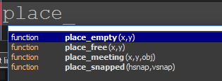
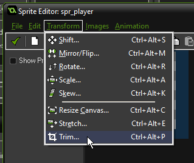
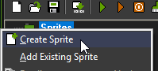

GameMaker in DIDG501
Notes for beginner GameMaker tutorials at AUT.
Announcements and new material appears in the Google Doc: https://goo.gl/TO6WnS
Latest changes
2017-05-21
- Fixed example movement code (broken in previous update)
- Added notes on reusable components and playtesting
- Added lever and door example
- layout improvements
2017-05-09
- Troubleshooting characters stuck in walls
- Walking up slopes activity
2017-05-07
- Added a link to Make A Game With No Experience video series
- Added 'what if my images are blurry'
- Tidied up several code examples
2017-04-15: Added Simple Menu example
About GameMaker
We are using GameMaker to make a 2d platform game.
GameMaker is a popular game-making tool for beginners. It's relatively easy to learn, but can take you all the way to making commercially successful games.
Some locally made GameMaker games:
- Super Go Down the Hole by Sergio Cornaga
- Narcoleptic Chicken Kid by Lianne Booton
Some commerically successful GameMaker games:
- Gunpoint by Tom Francis – around 700,000 copies sold
- Hotline Miami by Jonatan Söderström and Dennis Wedin – about 2 million copies sold
Getting Started with GameMaker
1. Watch tutorial videos:
Gamemaker basics by Shaun Spalding
Platform Game series by Shaun Spalding (this is a series of 12 videos)
If you want a different perspective:
(NEW) Make A Game With No Experience by Tom Francis
Tom's videos are much longer, but go into more detail. I like them a lot!
2. If you have a question, Google it.
For example:
- gamemaker menu screen
- how to make jump through platforms in gamemaker
- restart current level gamemaker
3. Use the built-in help
In GameMaker, press F1 to open the help. This includes a reference manual which lists every command you can use while coding in GameMaker.
While writing code, If you start typing a command then wait for a moment, GameMaker will display a list of commands you might be typing.
For example, type in 'place' then wait for a second (or press Ctrl) and this will appear:
4. Attend this course!
The classes in this course should be helpful if you are finding it difficult to learn from the resources above.
Common Problems
We are using GameMaker 1.4.
We are using GameMaker 1.4, which only works on Windows computers.
Due to recent changes, getting GameMaker for free is a little bit tricky. Follow these steps.
(The trick is to install GameMaker 1.3, which comes with a free licence, then upgrade to GameMaker 1.4, which no longer comes with a free licence as of 8th March 2017.)
- Go to http://ccm.net/download/download-23641-gamemaker-studio-standard
- Click the green download button (It says Download Freeware 172.7 MB)
- Wait for the download to finish.
- Run the installer and then start GameMaker Studio 1.3
- Two windows will pop up. One says “A new version of GameMaker-Studio is available”.
- Choose Remind Me Later - we do not want to update to the new version yet!
- The other window has 3 options. Choose the middle option by entering your email address and clicking ‘register’. Follow the process until you are emailed a licence key. Enter this in the box and continue. Then close GameMaker and reopen it.
- GameMaker will ask you t.o update again. Now you have a licence, so it is OK to update to the latest version.
Speed up saving, running and backups
In GameMaker, go to File -> Preferences.
Near the bottom, you will see paths for Temp directory, Asset Cache directory, Backup directory and Home directory. Change all of these to a folder on your computer's desktop.
This will make GameMaker work a lot faster.
GameMaker won't open my game???
It doesn't like reading games straight from a USB drive.
Copy your game folder onto the desktop, then open it from there. When you leave the room, remember to copy it back onto your USB drive.
Are your images very large (more than 1024 pixels wide or tall?)
If any sprite or background in your game is larger than the texture pages size, GameMaker will shrink it so it fits.
You can increase the texture pages size by going to Global Game Settings (the last item in the list on the left side of the screen), then going to 'Windows' (across the top) then 'Graphics' on the side.
Change the Size to something larger.
Please note that it is generally a good idea to avoid very large images in game development. Instead, try to create a scene by arranging several smaller images together.
There is more information about texture pages in the GameMaker Texture Pages documentation.
Other causes of blurry images
If you have small images and draw them big, GameMaker deliberately blurs them. You can change this.
Go to Global Game Settings (the last item in the list on the left side of the screen), then choose 'Windows' (across the top) then 'Graphics' on the side.
Untick the option Interpolate color between pixels.
Player or creature gets stuck in walls
Is this object animated? If your object is standing next to wall, and then it changes to a sprite that is larger than the sprite it had before, it might expand into the wall and get stuck.
To fix this, all sprites for the same object should have the same collision size.
First, Do NOT use 'Precise Collisions' on animated characters. (This makes their collision pixel-perfect, but if they are animated then their pixels will move around and they could get stuck.)
Secondly, click on 'Modify Mask'. This shows which part of your sprite is used for collisions.
If it is set to 'Automatic', it will crop off the empty areas. But you may need to change it to 'Manual' and make the numbers the same as they are in all the other sprites for this object.
What about flipping?
If a player or creature gets stuck when it touches a wall and changes direction, it probably has more space on one side of its sprite than the other.

This sprite has more space on one side than the other. If its face hits a wall, then it flips around, its tail will get stuck inside the wall.
You can fix this in a few ways:
- Adjust the collision mask so it has the same amount of no-collision space on each side
- Move your image into the middle of the sprite
- Use the 'trim' command to trim off the empty space.

Workshop Activities
Creating Sprites, Objects and Rooms
You need to be able to do this before you can do any of the other activities.
Start a new project.
Create a sprite:
- Right-click on the Sprites label on the left side of the screen and choose Create Sprite.
- This opens up the Sprite Properties
- Change the name to spr_player
- Click ‘Edit Sprite’ to open the Sprite Editor
- Click on the blank page icon to create a sprite
- You can accept the default size of 32 x 32 and click 'OK'
- Double-click on the new empty sprite.
- The Image Editor appears. Use the drawing tools to draw a quick picture
- Click the tick to close the Image Editor
- Close the Sprite Editor as well.
- Now we are back in the Sprite Properties window. Center the sprite by clicking ‘Center’ in the origin box
- Now close this window too by clicking 'ok':

Create another sprite:
- Follow the same process as above
- Name this sprite spr_wall
- Draw an image of a wall.
- Remember to center it.

Create objects
- Right click on ‘Objects’ in the main window and choose Create Object.
- Name the object obj_player
- Click on ‘<no sprite>’ and change it to spr_player

Close and save your changes
Create another object named obj_wall and change its sprite to spr_wall
Create a room
- Create a room by right-clicking on Rooms and choosing Create Room.
- In the Room Editor, you can place objects:
- Clicking on the ‘objects tab’
- clicking in the empty area below the tab and choose what object to place
- Click inside the room to place copies of that object.
- Place one obj_player and many obj_walls in your room.
- Close the room editor
Rename the room


You can turn on the grid to help you place things:
Set up Player events
- Set up the obj_player events and actions:
- Select obj_player so the Object Editor appears again.
- Use the button below the Events section to add a Create event.
- On the right hand side, click on the ‘control’ tab - this will show the code blocks.
- Drag the blank white page icon into the Actions box. This is you saying ‘When this object is created, I want some code to be read.’
- A code editor will pop up - you can close it for now.
- Now create another Event: A step event. You will be asked to choose what kind of step, choose the normal step.
- Once again, drag the blank white page icon into the Actions box. This is you saying: ‘On every step of the game, I want some code to be read’.
- A code editor will pop up again - you can close it for now.
- You can bring the code editor back by clicking on the code action. Make sure you choose the right event first! There are two different code sections, one inside the ‘Create’ event and one inside the ‘Step’ event.
The Create event happens once when an object is created. The Step event happens over and over again, usually 30 or 60 times each second.
Coding Basics
A comment
//this does nothing
//lines that start with two slashes are ignored by the computer
//these are called comments and you use them to make helpful notesif-statement
If-statements let you make something only happen in a certain situation. A real life example would be "If I'm hungry, I buy a hamburger."
In the code, the curley brackets {} show what code is connected to the if-statement. All code in the curley brackets will be skipped if the answer to the question is false.
//if the right arrow key is pressed, move 4 pixels to the right
if (keyboard_check(vk_right))
{
x = x + 5
}if-else-statements
Do one thing or do the other thing. You have to do one.
Real life example: if I'm at home, make dinner, otherwise buy a hamburger.
//move fast when hungry, otherwise move slow
if (hungry = 1)
{
x = x + 10
} else
{
x = x + 5
}Nested if-statements
Nested means 'one inside another'. A real life example would be:
If I'm hungry, then { if I'm at home, make dinner, otherwise buy a hamburger.}
If you say 'no' to the outer if-statement, then you skip over all the code inside its curely brackets.
//if the right arrow key is pressed, then move. If you are hungry, move fast, otherwise move slow.
if (keyboard_check(vk_right))
{
if (hungry = 1)
{
x = x + 10
} else
{
x = x + 5
}
}Using a variable
//if the right arrow key is pressed, move 4 pixels to the right
key_right = keyboard_check(vk_right)
if (key_right)
{
x += 4
}More variables
//if the right arrow key is pressed, move 4 pixels to the right
movespeed = 4
key_right = keyboard_check(vk_right)
if (key_right)
{
x += movespeed
}Check if a wall is in the way
//gravity: if we can move down 4 pixels without touching an obj_wall, then move down 4 pixels
//note that place_meeting tells us if we would be touching overlapping an object if we moved to a certain place
if (!place_meeting(x,y+4,obj_wall))
{
y += 4
}Player movement, gravity and jumping
This is similar to the code in Shaun Spalding's tutorial (linked at the start of this document), but the code here is a bit simpler.
///put this in the player Create event code
yspeed = 0///put this in the player Step event code
dir = 0
walkspeed = 20
if (keyboard_check(vk_right))
{
dir = 1
}
if (keyboard_check(vk_left))
{
dir = -1
}
//moving sideways
if (dir = 1 or dir = -1)
{
counter = 0
while (counter < walkspeed)
{
counter++
if (!place_meeting(x + dir * 1, y, obj_wall))
{
x += dir * 1
}
}
}
//falling
yspeed += 1
yDir = sign(yspeed)
counter = 0
while (counter < abs(yspeed))
{
counter++
if (!place_meeting(x,y+yDir,obj_wall))
{
y += yDir
} else {
yspeed = 0
}
}
//jump
if (keyboard_check(vk_space))
{
if (place_meeting(x, y + 1, obj_wall))
{
yspeed = -20
}
}Simple animations example
You will need to create new sprites for each animation.
To use this code, you need a sprites called spr_player and spr_player_run
A sprite can be a single image, or a series of images (an animation).
///animations (put this in obj_player Step code)
//if left arrow or right arrow is pressed
if (keyboard_check(vk_right) || keyboard_check(vk_left))
{
//play the running animation
sprite_index = spr_player_run //this needs to be the name of a sprite
} else
{
//play the standing animation
sprite_index = spr_player
}
//direction
if (keyboard_check(vk_left))
{
image_xscale = -1 //make the sprite flipped
} else
{
image_xscale = 1 //make the sprite not flipped
}
//To do: if the player is not on the ground, show a falling animation
//To do: if the player is not on the ground
// show a jumping animation if they are falling upwards (yDir is -1)
// else show a falling animation
Simple Main Menu
A menu where players can select different options using the keyboard.
Create a new Object, called obj_menu. Do not give it a sprite.
Create a new Font, called fnt_menu. You do this much like creating Sprites, Objects and Rooms. You can change the font style and font size.
Create a new Room, called rm_menu. Reorder it so it is the first room, by dragging it up into the first spot in the list of rooms. GameMaker will start it first when you start your game.
Add one obj_menu object into the room.
Give obj_menu a Create event, a Step (normal step) event and a Draw (Draw GUI) event. Inside each event, add the Code action that we always use.

If you want to draw anything custom on the screen, you need to add a Draw or Draw GUI event. Code inside these events is allowed to draw.
The difference between Draw and Draw GUI is that GUI drawing stays 'stuck' to the camera when the camera moves. For example, if you wanted to draw a health bar in the corner of the screen, use Draw GUI. The normal Draw action draws into the world. For example, if you wanted to show a health bar above an object in the game, you would use Draw and that healthbar would scroll out of view as the object scrolled out of view.
Put this in the Create event
///put this in the menu Create event
menu[0] = "Start"
menu[1] = "Options"
menu[2] = "Quit"
mpos = 0 //which option is selected
Put this in the Step event
//arrow keys move through the menu
if (keyboard_check_pressed(vk_down))
{
mpos = mpos + 1
}
if (keyboard_check_pressed(vk_up))
{
mpos = mpos - 1
}
//wrap around if we go off the end
if (mpos < 0)
{
mpos = 2
}
if (mpos > 2)
{
mpos = 0
}
//menu actions
if (keyboard_check_pressed(vk_enter))
{
if (mpos = 0) //start
{
room_goto_next()
}
if (mpos = 2) //quit
{
game_end()
}
}
Put this in the Draw event
draw_set_font(fnt_menu)
for (i = 0; i < 3; i++)
{
if (mpos = i)
{
//drawing selected option
draw_set_colour(c_red)
} else
{
//drawing non-selected option
draw_set_colour(c_blue)
}
draw_text(100, 100+i*60,menu[i])
}
Extra for experts:
We have 'hard-coded' the length of the menu. If you add another item to the menu, it won't appear on the screen and you won't be able to select it without tweaking some of the numbers.
You can instead use the command array_length_1d which counts how many items are in a list. Using this command, you should be able to write code that will adapt to the menu's length automatically.
menuSize = array_length_1d(menu);
//what now?Simple Shooting
Making one object create other objects can be used for many purposes besides shooting, but we'll use shooting as it is a classic example.
Create a new sprite, spr_shot to represent a shot (or bullet) and then an object named obj_shot with a Create event and Step (normal) event.
Shot Create action:
dir = 1
Shot Step action:
x = x + dir * 10
The code above lets us change the direction of the shot (left or right) by changing its dir variable to -1 for left or 1 for right.
Add this to obj_player step action:
//shooting
if (keyboard_check(vk_control))
{
shot = instance_create(x,y,obj_shot)
if (dir = -1)
{
shot.dir = -1
}
}
The code creates a new obj_shot object, and creates a variable 'shot' we can use to change variables inside the shot.
General info: Building games with reusable components
I've noticed a few people drawing their levels as one huge Photoshop document per level. Thats' OK, and some games do it that way – it's great for making everything look unique. But most games build their levels out of reusable parts.
You probably know that Minecraft's world is made out of repeated parts. All the grass in this scene is the same block over and over again. The trees are made of wood blocks stacked on top of each other.

Classic 2D games like The Legend of Zelda also use repeated tiles in an obvious way. You can see the rocks are repeated. You may also notice that most of the trees are the same square tile.
In 3D games, level designers can rotate and resize the same object so it looks different to the player. Sometimes they use even more clever tricks. In this screenshot, we see a low shelf. But when the player uses a cheat code to look under the floor:
You can see that the "low shelf" was actually just the top of a bookshelf. The level designer has sunk it into the ground to make it look like a new piece of furniture! Much faster than asking the artist to make something new.
Think about how you can use reusable components in your game to save time.
There are a lot of great talks about asset reuse in Skyrim and other Bethesda games. Take a look at these slides, starting at slide 128, for an example of how Skyrim's organic looking caves are made quickly and easily by level designers.
General info: Playtesting
Playtesting your game is the best and easiest way to make it good! See the slides from my NZGDC Playtesting talk.
In short:
- Ask someone to play your game.
- Watch and listen, but don't help them or criticise them.
- Note when they get stuck, confused, or frustrated.
- Fix the problems you find, then playtest again and see if it works better.
Walking up slopes
Let the player character walk up slopes
Create a new sprite, spr_slope and draw a slope.
Turn on 'Precise collision checking' so it uses pixel perfect collisions.
Create a new object called obj_slope, change its sprite to spr_slope, and change its parent to obj_wall.
Your character will now be able to walk down the slope. It will be treated like a wall (so you can stand on it), and it has precise collision checking (so its exact shape matters). However you cannot walk up the slope.
To be able to walk up the slope, we need some new movement code.
A slope is actually a series of very small walls - like stairs. We need to teach our character that if it can't walk forwards, it should try stepping up a little bit instead.
Here is the new sideways movement code. The slope part is in red:
//movement code
if (keyboard_check(vk_right) || keyboard_check(vk_left))
{
counter = 0
while (counter < walkspeed)
{
counter++
if (!place_meeting(x + dir * 1, y, obj_wall))
{
x += dir * 1
} else if (!place_meeting(x + dir * 1, y - 1, obj_wall))
{
x += dir * 1
y = y - 1
}
}
}
If you want to walk up even steeper slopes, simply add another copy of the red code, and change the step to 2 pixels:
//movement code
if (keyboard_check(vk_right) || keyboard_check(vk_left))
{
counter = 0
while (counter < walkspeed)
{
counter++
if (!place_meeting(x + dir * 1, y, obj_wall))
{
x += dir * 1
} else if (!place_meeting(x + dir * 1, y - 1, obj_wall))
{
x += dir * 1
y = y - 1
} else if (!place_meeting(x + dir * 1, y - 2, obj_wall))
{
x += dir * 1
y = y - 2
}
}
}
As usual, you can watch a video tutorial if you want to see a different approach.
A lever or switch that opens and closes a door
OK, there are two parts: A lever and a door.
Sprites
For both lever and door, we use a sprite with two frames of animation to represent "off" and "on" for the lever and "closed" and "open" for the door.

Create an empty sprite, called spr_empty, with no image inside. We will use this to make the door stop colliding so the player can walk through it.
Objects
Create obj_door and obj_lever. Connect them to the right sprites.
For the door, make its parent obj_wall. This means the player cannot walk through it:
Give both objects a Create event and Step event, just like usual.
Lever code:
The lever changes (from on to off, or from off to on) when you touch it. We don't want the lever to flick constantly when you stand on it, so it only triggers when you start touching it - i.e. you are touching it now, but you were not touching it last time we checked.
To keep track of this, we need a variable wasTouching which keeps saves of the collision information from the one frame so we can use it in the next frame.
///Lever Create
on = false
wasTouching = false
image_speed = 0 //do not animate
///Lever Step
isTouching = place_meeting(x,y,obj_player)
//if the player just started touching us
if (isTouching = true and wasTouching = false)
{
//reverse it - 1 becomes 1, or 0 becomes 1
on = !on
//update my image
//either sprite 0 or sprite 1
image_index = on
//open or close the door
obj_door.open = on
}
wasTouching = isTouching //remember for next time
Door code:
mask_index sets which sprite is used for collisions with this object. For the door, we change its mask to the empty spr_empty when it is open. The door will still look normal, but it will be invisible for collisions.
Setting mask_index to -1 tells GameMaker to use the sprite as the mask.
///Door Create
open = false
image_speed = 0 //do not animate
///Door Step
if (open)
{
//turn off collisions
mask_index = spr_empty
} else
{
//normal collisions
mask_index = -1
}
//update my image
image_index = open //either 0 or 1
How to publish and share your game
Create a stand-alone build
In GameMaker, click File (top left corner) then choose Create Application
Under Save as type choose Single runtime executable (*.exe)
Click Save to create a single .exe file of your game.
Publishing online
Use a file sharing service like Dropbox or Google Drive to share your .exe file. You will be able to create a link to the file which you can then post to your blog or email to someone.
Taking it further
You might want to publish your game on itch.io. Itch is an online store and community where you can publish your game. You can make your game free, charge money for it or ask for donations. Here is an example of an itch profile: loren schmidt's itch page.
That's all so far.